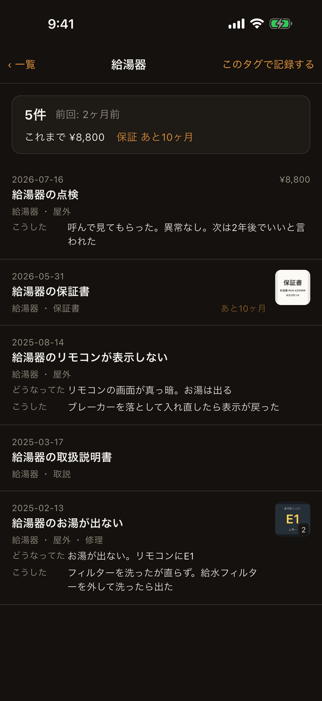
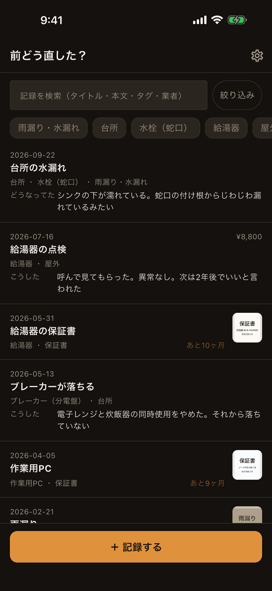
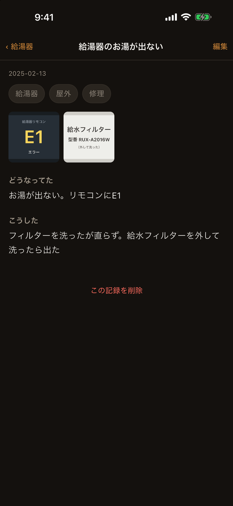
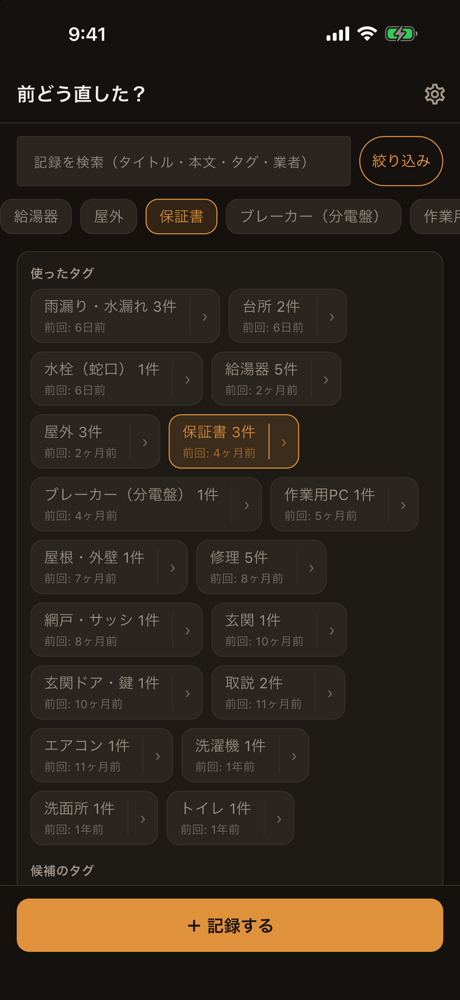

前どう直した？ App Storeで公開中
前に直した方法や保証期間が開けばすぐ出る
家で何かが壊れたとき、自分がどう直したかを1件ずつ残しておくアプリです。次に同じことが起きたら、開いて前回を読むだけ。半年前の自分が答えを書いています。保証書や取扱説明書も、写真を撮って1件として残せます。
こんな方に
- 去年エアコンをどう直したか、もう思い出せない
- 家電の保証書がたまっていて、どれがいつまでか分からない
- 業者にいくら払ったか、次に呼ぶときに思い出したい
- 家の中で何かが壊れたとき、対応するのはいつも自分
画面
タグを押すと、答えが出る

一覧に、費用と保証の残りと写真が並ぶ

効かなかったことまで、1件に残る

言葉を思い出せなくても、タグを押すだけ

タグを押すと「答え」が出ます
ここがメモ帳との違いです。タグを押して開く画面の上に、4つの数字が出ます。
- これまで何件あったか（5件）
- 前回はいつだったか（前回: 2ヶ月前）
- これまでいくらかかったか（これまで ¥8,800）
- 保証はあと何ヶ月か（保証 あと10ヶ月）
この4つは、メモ帳に書いた記録を並べ替えても出てきません。数えるか、日付を引くか、足し算をしないと分からないからです。書くことは1つも増えません。4つとも、書いた記録からその場で計算しています。
開かなくても分かる一覧
- 行に費用（¥8,800）と保証の残り（あと10ヶ月）が出ます
- 写真のある記録には、1枚目の小さな写真が付きます。何枚あるかも出ます
- 新しい順に並びます
保証の期限は出しますが、通知は送りません
保証の残りは「あと10ヶ月」「期限切れ」と画面に出るだけです。期限が近づいたときにお知らせを送ることはしません。通知でせかしてほしい方には向きません。
書くのは2つの欄だけ
- 「どうなってた」と「こうした」。どちらも空のままで保存できます
- 必要なのはタイトル1行だけ。写真もタグも本文も、後から足せます
- 効かなかったことも書いておけます。「フィルターを洗ったが直らず、給水フィルターを外して洗ったら出た」——次の自分が助かるのはここです
- 費用・業者・期限・起きた日は「くわしく」に畳んであるので、急ぐときは触らずに保存できます
同じものをタグでまとめる
- 給湯器・台所・雨漏り・保証書。設備の名前も、場所も、困りごとも、書類の種類も、ぜんぶ同じタグです
- 言葉を思い出せなくても、タグを押せば前回が並びます
- 候補は36個を最初から入れてあります。自分の言葉で足すこともできます
探す
- タイトル・どうなってた・こうした・タグ・業者名から探せます
- 写真に写っている文字も、探すときの手がかりに使います。読み取りはこの端末の中だけで行い、結果を外へ送ることはありません（写真によっては読み取れないこともあります）
データの置き場
- 記録も写真も、この端末の中だけに保存されます。アカウントもサーバーもありません
- 書いたものが外へ出ることはありません。通信するのは、購入とその復元のときだけです
- 広告はありません。使い方を集める仕組みも入れていません
- 書き出しと復元はいつでも無料です。機種を変えるときは、書き出したファイルを新しい端末へ移してください
- 記録の一覧はCSVでも書き出せます（表計算ソフトで開けます）
このアプリがしないこと
- 原因を言い当てたり、直し方を提案したりはしません。書いたものをそのまま残して、そのまま見せます
- 取扱説明書をインターネットから取ってくることはしません。自分で撮った写真を残します
- 掃除や点検の予定を立てたり、催促したりはしません
- 通知は1つも送りません
料金
- 記録5件まで無料です
- 6件目からは買い切りのProプラン（一度のご購入で、記録が無制限になります）
- すでに書いた記録は、無料の5件を超えたあとも、見る・書き直す・消すことができます
- 書き出しと復元は、無料のままいつでも使えます
- 月額はありません
ダウンロード
スマホのカメラでQRコードを読み取ると、App Storeのページが開きます。